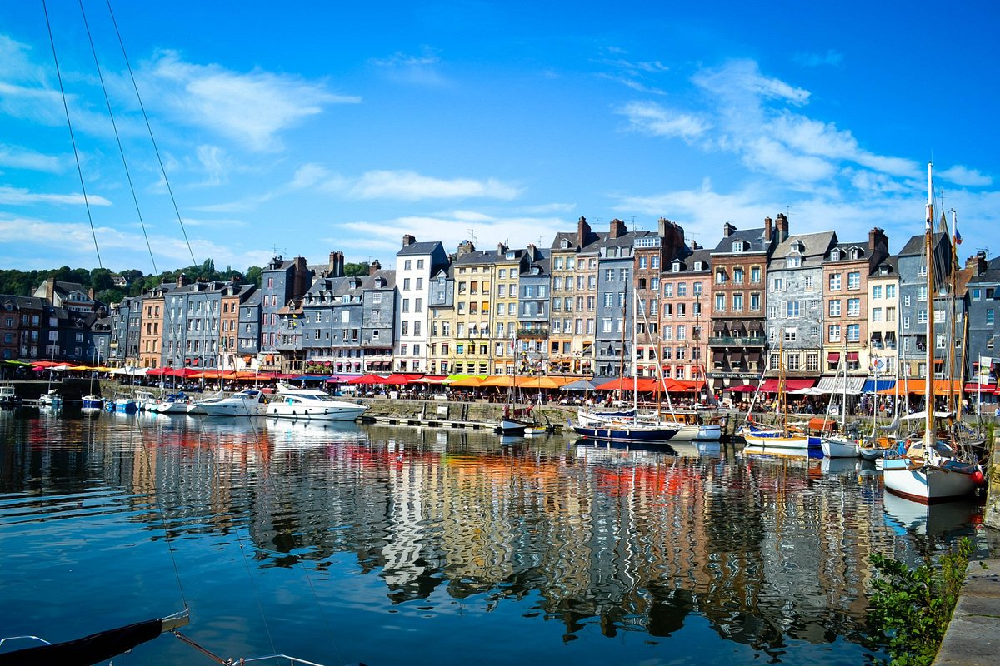
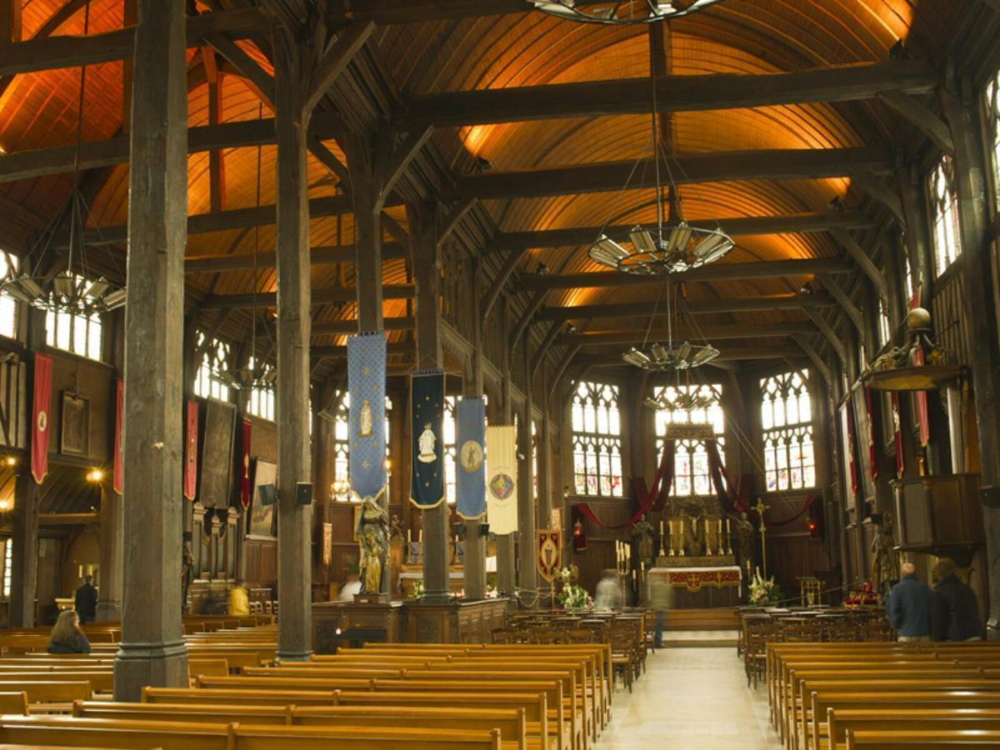
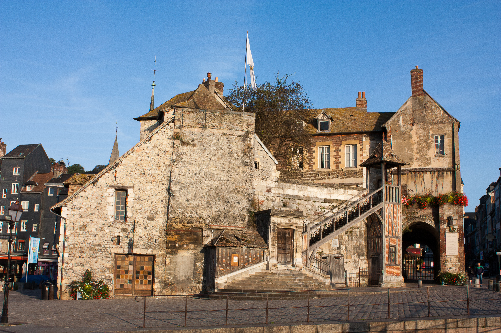
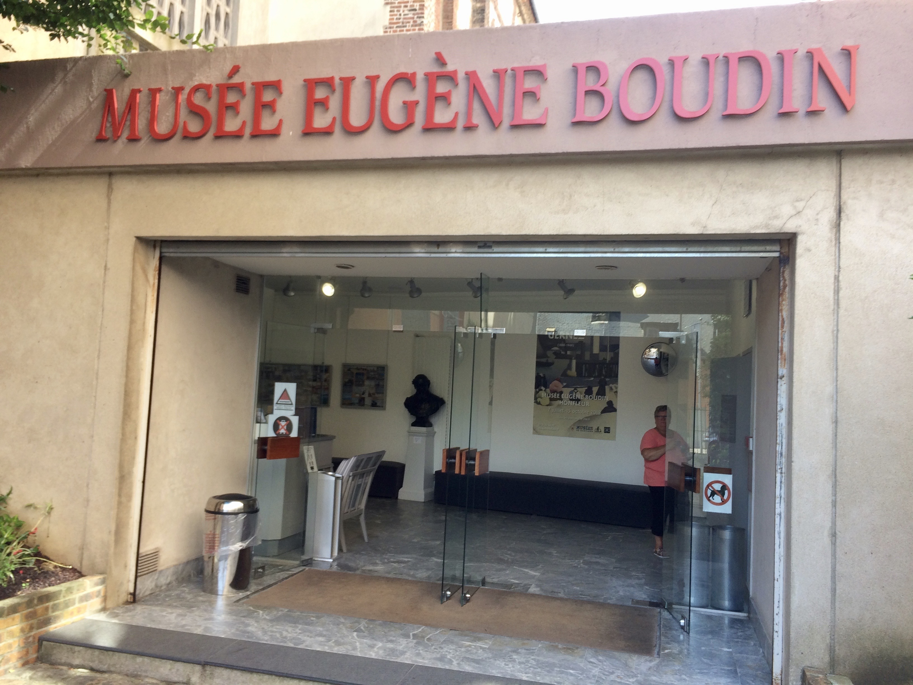
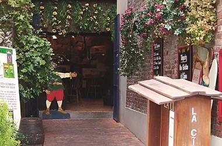
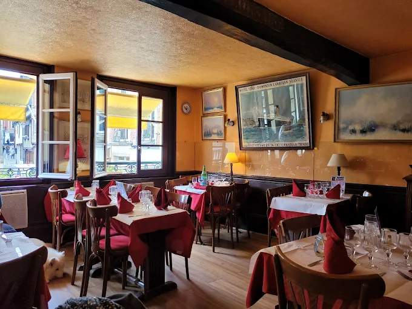
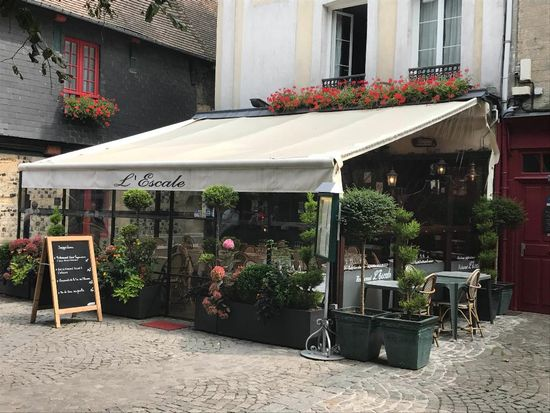
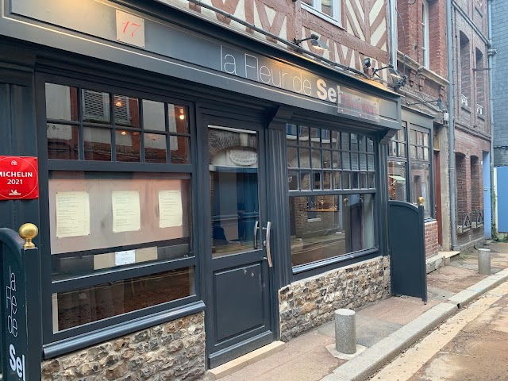
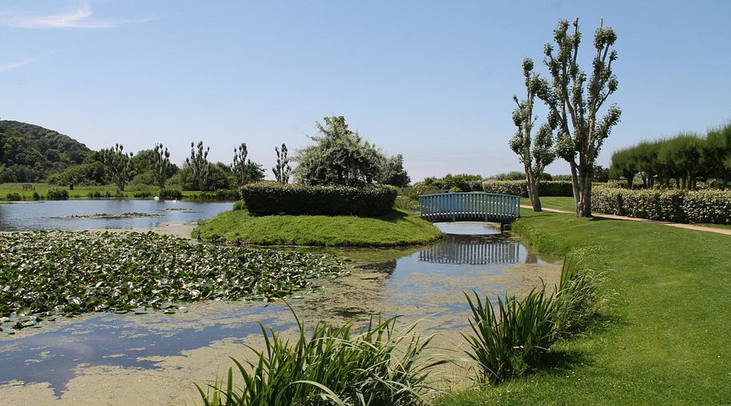
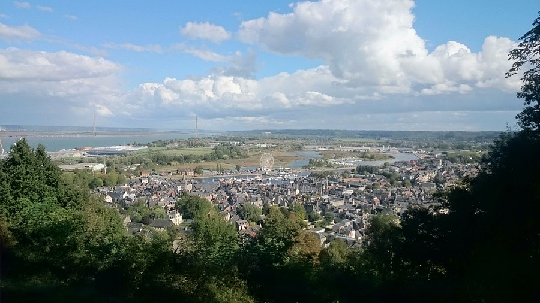

🏛️ Patrimoine
Le Vieux Bassin
Le cœur de Honfleur, célèbre pour ses façades colorées qui se reflètent dans l’eau.
Entre port, art et charme normand
Présentation
Honfleur est l’un des joyaux de la Côte Fleurie. Autour du Vieux Bassin, ses maisons colorées, ses ruelles pavées et son patrimoine maritime composent un décor unique. Ville d’art et d’histoire, Honfleur a également inspiré de nombreux peintres et invite aujourd’hui à flâner entre quais, galeries et terrasses.
À ne pas manquer

Le cœur de Honfleur, célèbre pour ses façades colorées qui se reflètent dans l’eau.

Une étonnante église tout en bois, construite par les charpentiers de marine de Honfleur.

L’ancien bâtiment fortifié qui garde l’entrée du Vieux Bassin et offre une superbe vue sur le port.

D’anciens entrepôts du XVIIe siècle, témoins de l’importance du commerce du sel dans l’histoire maritime de Honfleur.

Découvrez les œuvres du peintre honfleurais et des artistes inspirés par les paysages normands.
Saveurs

Une adresse conviviale pour découvrir les spécialités normandes autour des pommes et du cidre.
Découvrir l'adresse
Une adresse traditionnelle au cœur du quartier Sainte-Catherine, idéale pour une pause gourmande.
Découvrir l'adresse →
Une table tournée vers la mer pour déguster poissons et fruits de mer au cœur de Honfleur.
Découvrir l'adresse →
Une cuisine raffinée qui met en valeur les produits de saison dans un cadre chaleureux.
Découvrir l'adresseCoups de cœur

Une agréable promenade au bord de l’eau, entre jardins, sculptures et personnages célèbres.

Prenez de la hauteur pour profiter d’un superbe panorama sur Honfleur, le port et l’estuaire.
Explorez Honfleur